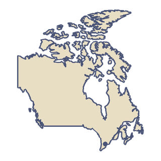

北美洲
加拿大
加拿大是世界上面积第二大的国家。它从大西洋一直延伸到太平洋，向北伸进北极地区，湖泊比其他任何国家都多。国旗上有一片红色的枫叶。
“我想沿着银镖号的路线飞过冰面。”
- 1909 年，J. A. D. 麦柯迪驾驶「银镖号」飞过结冰的巴德克湾，这是加拿大第一次动力飞行。
- 算上所有岛屿，加拿大的海岸线是世界上最长的，超过 20 万公里。

国土
加拿大有十个省和三个地区，人口超过 4100 万。它和美国之间的边界是世界上最长的国际陆地边界。大约 80% 的加拿大人住在离这条边界 150 公里以内的地方。全国的土地分为七个自然区域，其中包括加拿大地盾和内陆平原。北方针叶林覆盖了全国的大部分地区。英语和法语都是官方语言。
出行
横加公路穿过全部十个省。它在 1962 年通车，但直到 1971 年才全部完工。名叫「加拿大人号」的列车在多伦多和温哥华之间运行，全程 4466 公里，大约要四天。多伦多皮尔逊国际机场是加拿大最繁忙的机场，2025 年的旅客达 4730 万人次。加拿大第一条地铁于 1954 年 3 月 30 日在多伦多开通。
饮食
加拿大生产了全世界 75% 以上的枫糖浆，其中约 90% 产自魁北克。人们在冬末和春天采集树液，常常在「糖屋」里加工。在多伦多，圣劳伦斯市场的豌豆粉培根（peameal bacon）三明治常被称为这座城市的招牌菜。豌豆粉培根通常被认为是猪肉加工商威廉·戴维斯的发明，他那家忙碌的工厂也让多伦多有了一个旧绰号：「猪城」（Hogtown）。
发现
1921 年，弗雷德里克·班廷和查尔斯·贝斯特在多伦多大学首次分离出胰岛素。1922 年 1 月 11 日，一名 14 岁的男孩在多伦多总医院接受了世界上第一次胰岛素注射。